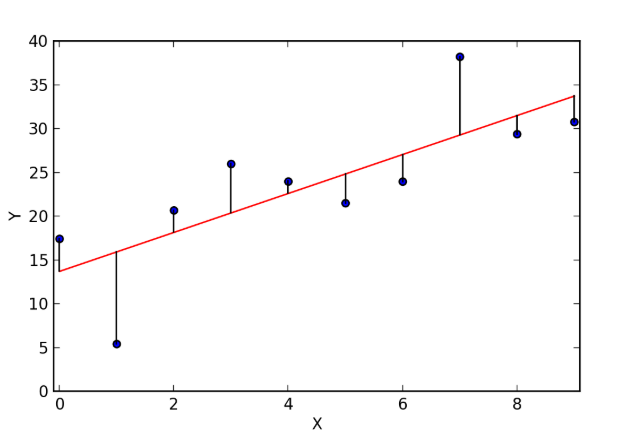
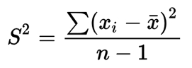
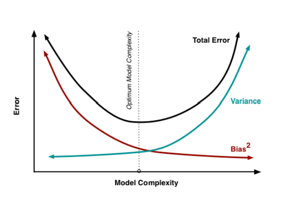
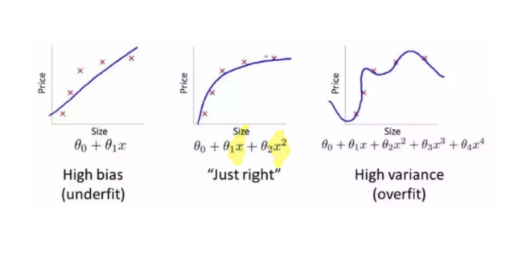
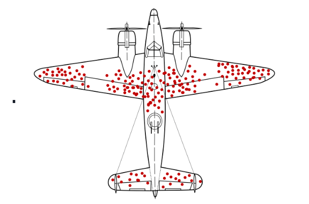

Module 4: Bias-Variance Tradeoff
Module Overview
In this module, you will learn about the bias-variance tradeoff, a fundamental concept in machine learning that helps us understand model performance and generalization. You'll explore how to balance model complexity to avoid both underfitting and overfitting, and you'll learn about metrics for evaluating model performance.
Learning Objectives
- Understand and Define Bias
- Understand and Define Variance
- Describe the Bias / Variance Tradeoff
- Define Different Types of Biases
Objective 01 - Understand and Define Bias
Overview
Machine learning algorithms use mathematical or statistical models with inherent errors in two categories: reducible and irreducible error. Irreducible error, or inherent uncertainty, is due to natural variability within a system. In comparison, reducible error is more controllable and should be minimized to ensure higher accuracy.
Bias and variance are components of reducible error. Reducing errors requires selecting models that have appropriate complexity and flexibility, as well as suitable training data. Data scientists must thoroughly understand the difference between bias and variance to reduce error and build accurate models.
Bias is the calculated error due to systematic mistakes that lead to high or lower results when compared to the actual values. The individual residual of an estimate is the difference between that estimated and the actual value.
In linear regression, prediction bias is “a value indicating how far apart the average of predictions is from the average of labels in the dataset.” In the majority of applications, prediction bias is not deliberately included as part of a model's design, but it is used as a measure to evaluate and tune the model.
When estimates are biased, they are consistently incorrect in one direction due to mistakes in the model. An example could be a model that consistently predicts daily sales that are higher than those actually observed. The model is biased, as there is a mistake that gives too high an estimate. If this model were to be unbiased, there may still be days predicted that are not correct, but the incorrect sales amounts will sometimes be higher and sometimes lower than the observed sales.

Objective 02 - Understand and Define Variance
Overview
In statistics, variance measures variability from the average or mean. It is calculated by taking the differences between each number in the data set and the mean, then squaring the differences to make them positive, and finally dividing the sum of the squares by the number of values in the data set minus one.

- A high variance indicates that numbers in the set are far from the mean and far from each other.
- A small variance indicates the opposite.
- A variance value of zero indicates that all values within a set of numbers are identical.
- Every variance that isn't zero is a positive number.
- A variance cannot be negative. You can't have a negative value resulting from a square.
Higher variance may lead to more errors in values that the model has not seen yet. The model thus fails to generalize well to unseen data.
Next Steps:
As you can see, variance and bias are measured by looking at the error values observed and predicted values. To properly tune our model, we must determine a balance between the rate of bias and variance in our results.
Objective 03 - Describe the Bias / Variance Tradeoff
Overall
One goal of predictive modeling is to find the optimal "sweet spot" in which we minimize our error. Ideally, we're trying to find the ideal balance of bias and variance that allows our models to properly generalize to its testing or new values.

This requires us to modify our model to increase or decrease complexity to find a model that generalizes well on its training and testing dataset.

Objective 04 - Define Different Types of Biases
Overview
Bias is the purposeful or unintentional selection of one class or outcome, over other groups or outcomes in a dataset. This occurs when a model or data set is unrepresentative. This drawback in statistical analysis can be rectified in the data selection process as part of your EDA, data cleaning, or feature selection.
Types of Bias
Some types of biases you may encounter include:
Selection Bias
Using groups, individuals, or data in a way that does not allow for proper randomization. This may result in a sample that is not representative of a population.
Example: Polling only individuals who have access to a landline telephone in 2012. This demographic may not be wholly representative of all voters in the United States.
Survivorship Bias
Where interpreting the results from individuals who have 'survived' a long process are included or excluded.
Example: From Sreenivasan Chandrasekar:
“We enroll for gym membership and attend for a few days. We see the same faces of many people who are
fit, motivated and exercising everyday whenever we go to gym. After a few days we become depressed why
we aren't able to stick to our schedule and motivation more than a week when most of the people who we
saw at gym could. What we didn't see was that many of the people who had enrolled for gym membership had
also stopped turning up for gym just after a week and we didn't see them.”
During World War II, Abraham Wald took survivorship bias into his calculations when considering how to minimize bomber losses to enemy fire

Recency Bias
When preference for the most recent event is favored over historic events.
Example:
The final lawyer's closing argument a jury hears before being dismissed to deliberate.
There are many others you will have to deal with from your datasets. It is important to use the proper language when describing the results of your models given the sample you have chosen to use from a population.
Guided Project
Open bias_variance_prop_lesson_DS39.ipynb in the GitHub repository below to follow along with the guided project:
Guided Project Video
Module Assignment
Complete the Module 4 assignment to practice bias-variance tradeoff techniques you've learned.